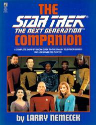
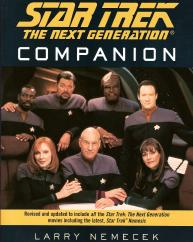
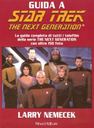

Star Trek The Next Generation Companion |
|  |
|  |
|  |
| AUT | Larry Nemecek |
| EDI | Pocket Books, 1992 (copertina blu) Pocket Books, 1995 (copertina rossa) Pocket Books, 2003 (copertina nera) |
| PAG | 340 (copertina rossa) 372 (copertina nera) |
| ISBN | 0-671-88340-2 (copertina rossa) 0-7434-5798-6 (copertina nera) |
| Edizione italiana: | Guida a Star Trek The Next Generation |
| TRA | Paola Cartoceti |
| PAG | 343 |
| EDI | Fanucci, 1997 |
| ISBN | 88-347-0593-9 |
L'8 Settembre 1987, più di vent'anni dopo la prima trasmissione della Serie
Classica di Star Trek, milioni di fan americani si sono seduti di fronte al
proprio televisore per assistere la debutto di una serie tutta nuova, per la cui
produzione non si è badato a spese. Lo stesso creatore della Serie
Classica accettò di diventarne il produttore. Eppure, anche tra i fan più
fedeli di Star Trek avevano i loro dubbi: la magia della Serie
Classica avrebbe potuto essere replicata? La risposta fu decisamente un sì.
Comandata dal capitano Jean-Luc Picard,
(superbamente interpretato dall'attore shakespeariano Patrick
Stewart), la USS
Enterprise lanciò un messaggio di speranza in una galassia poco
familiare. Episodio dopo episodio, The
Next Generation fece nascere un futuro in cui la collaborazione e la
mutua comprensione diventarono le chiavi per risolvere i problemi dell'umanità.
Finalmente, in questo libro avrete la guida ufficiale ad ogni singolo episodio
delle avventure televisive della nave stellare NCC-1701-D;
una raccolta di informazioni che include le trame e i credit di ogni telefilm,
narrando anche gli affascinanti aneddoti legati alla mondo dietro le quinte.
Conoscerete l'intera storia della serie TNG.
L'edizione con la copertina blu è quella originale; quella con la copertina rossa è aggiornata a
Generations; quella con la copertina nera è aggiornata a Nemesis.